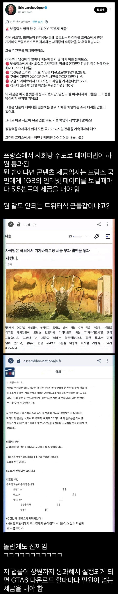
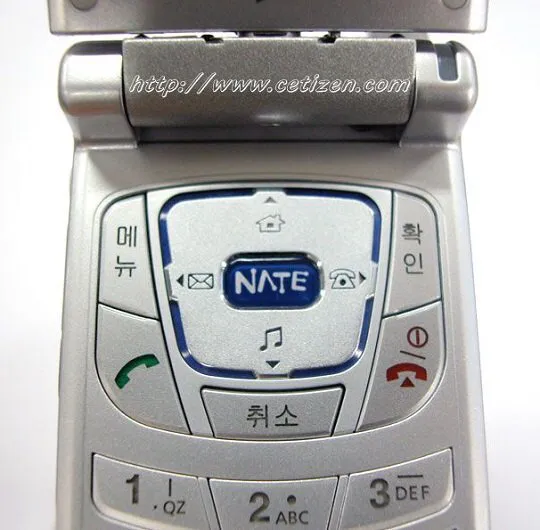

이버튼임 ㅇㅇ


이버튼임 ㅇㅇ
그런데 돈은 국가가 가져가는
망사용세
망사랑 용까진 좋은데
망사. 용
극과 극은 통한다고 트럼프가 하는 ㅄ짓을 그대로 답습하고 있네 ㅋㅋ
그러니까 저게 프랑스 시민들이 원하는 법이라는거지?
다수(은퇴한노인)
은퇴 노인이면 핸드폰이나 컴퓨터를 거의 만질 줄 모를 사람들이잖아... 즈그들은 거의 해당 안 되는데 젊은 층에게 삥 뜯으려고 별의별 좆짓거리를 창의적으로 다 하네 시발
시민들이 돈이 부족한데 복지 수준은 무조건 유지하라고 강요하면서 그렇다고 내 돈은 뜯으면 알지? 하고 버티니까 되는대로 딴데서 뭐라도 돈 뜯어봐야지 뭐
저런거보면 복지를 최대한 주면 안됨
그래서 포퓰리즘이 존나 무서운건데 저거 우리 30년뒤 미래임
모뎀 시절로 돌아가버리는 거냐구
우리나라가 망사 용료로 시끄러웠을때 그거 동의하던게 eu였음
GTA6 대략 200기가.. 1100센트 유로 1500원 하면 16500원이네
아니 다운로드가 1.6만? ㅋㅋㅋㅋㅋㅋㅋ
제발 남의 이야기로 끝나자
이제 한국통신사들 저거보고 다시 시작한다 ㅋㅋ 개새끼들
이쯤되면, 레볼루숑을 즐기는거 아닌가 싶다
저런거라도 뜯을려는거 보면 진짜 ㅈ된거같네 ㅋㅋ
망사용료?
근데 상식적으로 저건 플랫폼이나 제작사에서 감당할 수 있는 세금이 아니고 당연히 사용자에게 전가될 수밖에 없는데
걍 자국민 죽이기법 아닌가 ㅋㅋ
몰라 프랑스 요새 보면 병신들 모임같음
우리나라 포퓰리즘 어쩌고는 아가 수준임
은퇴 베이비부머 노인들은 인터넷 안써서 괜찮은가봄ㅋㅋ
여기도 부동산에 세금먹여도 세입자에게 전가안된다는 골빈 놈들 허다한데 뭘 그놈들이 마가 까는거보면 동족혐온가 싶더라
소비자들이 부담하던가, 철수하는거지 뭐 ㅋㅋㅋ
10기가도 아니고 1기가?? 요즘 얼마나 쉽게 1기가가 소모되는지 알고 하나? ㅋㅋ
하다하다 돈 나올 구석이 없으니 별 지랄을 다하는구나
아직 남의 나라 얘기지만 우리는 안 그랬음 한다 ㄷㄷ
우리는 IMF때 금모으기 운동을 벌이고, 월급을 축소하거나 심지어 무임금으로까지 일하며 위기를 극복하기위해 노력했는데....그때 애국심을 다써버리고 기업들이 토사구팽하는걸 경험하며 한국인들이 다 돈과 계급을 지상목표로 삼는 급진적 천민자본주의자들로 변한듯....한국에 만약 두번째 IMF가 오면 금모으기, 물산장려 이딴거 다 때려치고 프랑스 시위처럼 할거같음
그냥 연금개혁을 해라 병신들앜ㅋㅋㅋㅋㅋㅋㅋㅋㅋㅋㅋㅋㅋㅋㅋㅋㅋㅋㅋㅋㅋㅋㅋㅋㅋㅋㅋ
시도할때마다 폭동 일어났는데? ㅋㅋ
할 수가 없으니 저러는 거임
저새끼들은 폭동 일어나도 입꾹닫 해야해
답은 코로나 대확산 통한 인구구조 재개편 뿐이다
정보이용료 ㅋㅋㅋㅋㅋㅋ
시대를역행하네
제발 폭동에 박차를 가해달라고 비는 꼴이네
그냥 요즘 2000년대초만해도 선진국이라고 본받아야한다는 나라들 죄다 미쳐돌아가고 있는 듯. 우리가 정상으로 보임. 걍 자기만의 길을 개척하는게 맞음
나라자체가 늙어가니까 그에따른 문제들이 생기는거네..
가뜩이나 AI나 IT 경쟁에서 뒤쳐졌는데 아예 누우려고 하네
그럼 프랑스에선 cd로 구매하는게 낫겠네?
근데 cd로 판매하는거 줄이는 추세잖아 ps5는 안함ㅅㄱ 했고
개같은 상황이네
NATE 버튼은 옳았다 단지 존나빨랐을뿐...
이래서 무자녀세 걷어야함. 자녀가 없는 노인들은 어차피 나는 곧 죽을 건데 나라 미래 알빠노 하는 ㄹㅇ 오늘만 사는 사람들이라 그런 정책을 밀어주는 정치인들을(포퓰리즘적 복지) 지지할 수밖에 없음. 이 사람들이 쪽수가 졸라 많아서 국가 전체 정책을 좌우한다.
그래도 자녀나 손주가 있으면 그런 경향이 덜함 ㅇㅇ
이제 트위치 유럽에서도 철수 하는 건가
다 국민에게 전가될 비용이지
이거 완전 망사용료